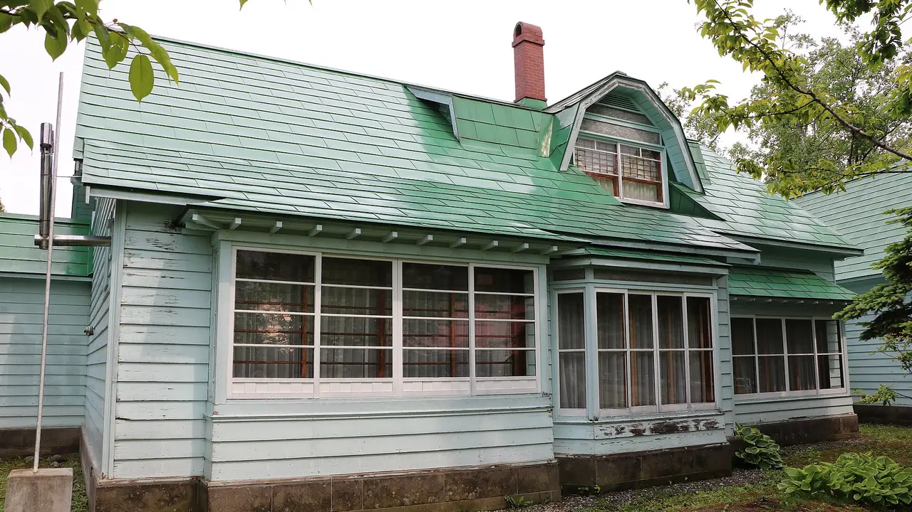
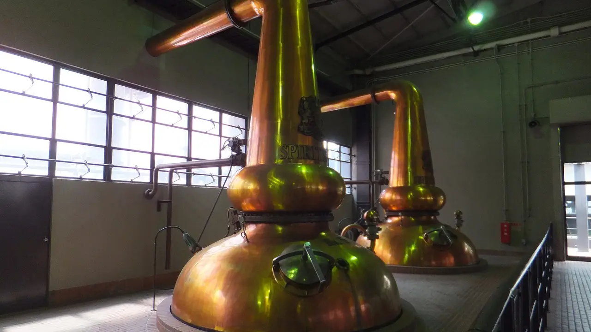
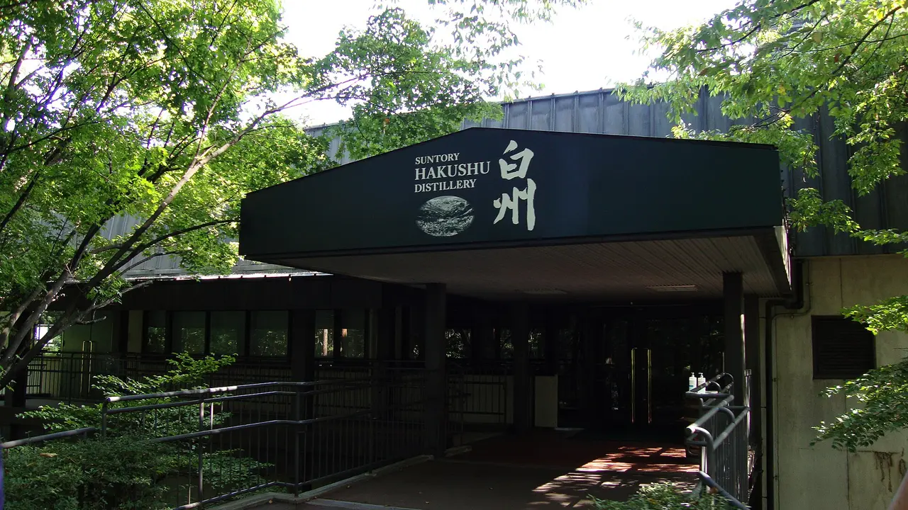
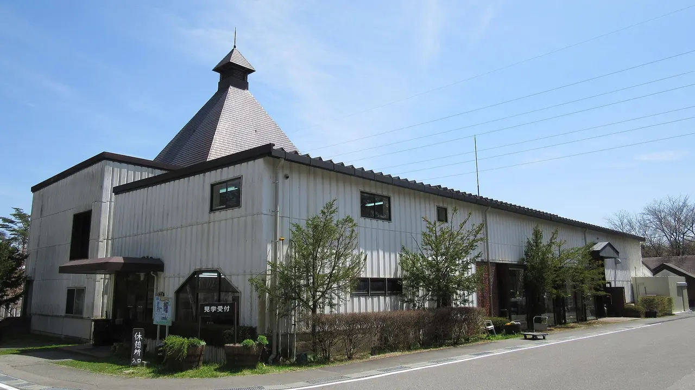
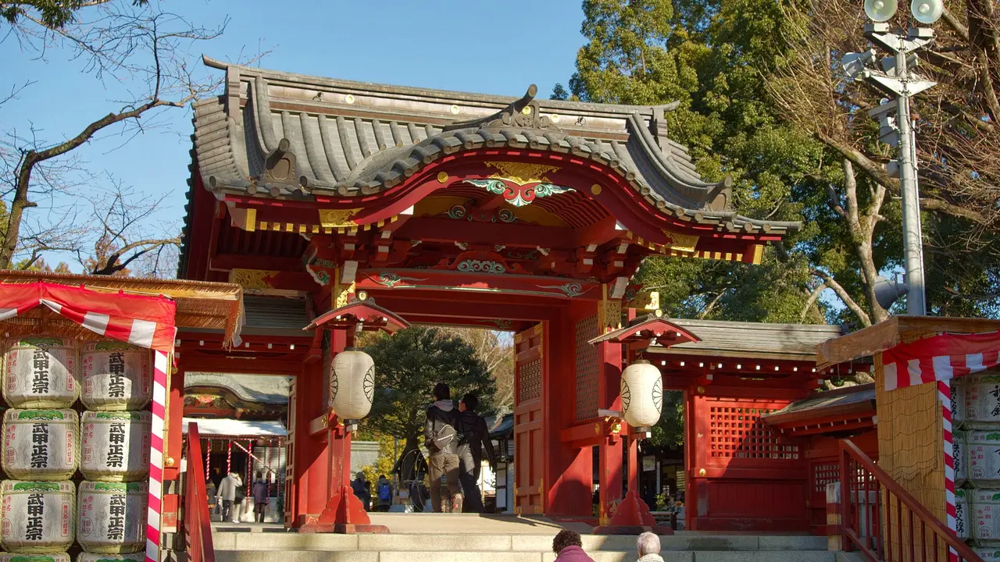

Japanese whisky distillery towns worth staying overnight in
Most guides to Japanese whisky tell you which bottles to try. The harder problem is getting through the gate. Two of the most famous distilleries run a monthly lottery that most applicants lose. Two others cost nothing and let you walk in. One of the most sought-after names in the country will not admit the public at all, on any day except one in February. That access reality — not the tasting notes — is what decides where you should actually go, and which town is worth booking a night in rather than rushing back from. If you came from our knife towns or tea regions guides, this is the same approach applied to a drink.

The access problem, in one table
Read this before you plan anything else. The difference between these five is not quality; it is whether a visit is something you can arrange, something you have to win, or something that does not exist.
| Distillery | Town | Can you get in? | Cost | Worth a night? |
|---|---|---|---|---|
| Yoichi余市 | Yoichi, Hokkaido | Yes — free self-guided entry; guided tour by booking | Free tour; paid tasting counter | Yes — and the trip out there almost demands it |
| Yamazaki山崎 | Shimamoto, Osaka (Kyoto border) | Lottery — apply ~2 months ahead, short window | ~¥3,000 standard, ¥10,000 premium | No — stay in Kyoto or Osaka |
| Hakushu白州 | Hokuto, Yamanashi | Lottery, plus a first-come cancellation course | ~¥3,000 standard, ¥10,000 premium | Yes — the forest and the Alps are the point |
| Mars Komagatake駒ヶ岳 | Miyada, Nagano | Yes — free tour, booking prioritised when busy | Free tour; tastings charged | Yes — 798 m up in the Central Alps |
| Chichibu秩父 | Chichibu, Saitama | No — trade only, by appointment | — | Yes, for the town and the February festival |
Suntory's lottery is the part people get wrong. Applications open roughly two months before the visit month and stay open only a few days. For September 2026 visits, Yamazaki's window ran 8–12 July with results by 16 July; Hakushu's ran 3–7 July with results on 11 July. Winning first time is uncommon — apply for several dates and have a fallback.
The five towns, honestly
Yoichi, Hokkaido — the one that started it, and the easiest to enter

Masataka Taketsuru founded Yoichi in 1934 after looking for somewhere that resembled Scotland: cold, humid, clean air, good water. He found it on the Sea of Japan coast west of Otaru. It is the origin story of Japanese whisky, and — pleasingly — the most open of the five.
You can walk the grounds free, all day, at your own pace: the kiln, the malt store, the pot stills, the warehouses, the bottling line. Guided tours run too and need booking, with a free tasting afterwards that includes Single Malt Yoichi. The Nikka Museum covers the craft and Taketsuru's life across four sections. The house he shared with his Scottish wife Rita was relocated onto the site in 2002; the entrance hall and garden are open.
✔ Free, generous and genuinely walkable. Nothing here depends on winning a draw.
✘ It is a long way. Roughly 465 minutes from Tokyo to Sapporo by rail before you even start west — realistically you fly. Hokkaido scores 1/5 for urban scale in our dataset; Yoichi is a small coastal town.
Stay the night: yes, and not only because of the distance — the tasting counter is more enjoyable when nobody has to drive. Otaru, about 25 minutes away, has far more beds and its canal district. See the Hokkaido guide.
Yamazaki, Osaka — the oldest, and the hardest ticket

Yamazaki is Japan's first and oldest malt whisky distillery, opened in 1923 on the Osaka–Kyoto border where three rivers meet. It is also the one people most want to see and most often cannot. Paid guided tours are reservation-only through a monthly lottery, released about two months ahead in a window of a few days, with results by email. The standard tour runs about 80 minutes for around ¥3,000; a premium option is about ¥10,000. Yamazaki does run dedicated English tour slots, which Hakushu handles instead with a translated audio-guide app.
Two practical restrictions that catch people out: under-20s cannot join the paid tours, and walk-ins are generally refused — even the museum needs a reservation, though it is free. Between 1 July and 30 September 2026 the time spent in production areas is shortened to reduce heat-stroke risk, so a summer tour covers less of the working plant.
If you lose the draw, the site is still worth the trip: the whisky museum, the distillery-exclusive shop, and a paid tasting counter where you can drink things you will not find outside. Those are usually easier to reserve than the tour itself.
✔ The historical centre of Japanese whisky, twenty minutes from Kyoto, with a tasting bar that softens the blow of losing the lottery.
✘ The lottery genuinely defeats most applicants, and the surrounding area is a commuter belt rather than a destination.
Stay the night: no. Base yourself in Kyoto or Osaka and treat this as a half-day.
Hakushu, Yamanashi — a distillery inside a forest

Hakushu was built in 1973 in Hokuto, high in the Southern Japanese Alps, about two hours from Tokyo. Suntory calls it a forest distillery and for once the marketing is just a description: the site sits in woodland, and the water is the reason it is there.
The booking system is the same lottery as Yamazaki — for September 2026, applications ran 3–7 July with results on 11 July — but Hakushu adds something Yamazaki does not: a first-come cancellation-slot course, which is a genuine second chance if you missed the draw. Standard tour about 90 minutes for around ¥3,000, premium about ¥10,000, with a translated audio-guide app rather than dedicated English departures.
✔ The most attractive setting of the five, and the only Suntory site with a realistic backup route to a tour.
✘ Yamanashi scores 1/5 for public-transport access in our dataset, the worst of these five — the last leg is the awkward part, and you should not be driving afterwards.
Stay the night: yes. Hokuto and the Kobuchizawa area are walking, onsen and stargazing country, and staying removes the drink-and-drive problem entirely. See the Yamanashi guide.
Komagatake, Nagano — free, high, and nobody queues

Mars Komagatake, run by Hombo Shuzo in the village of Miyada, sits at 798 metres at the foot of its namesake peak in the Central Alps. The company's whisky story goes back to 1949; this distillery dates from 1985, went quiet for a long stretch, and came back.
Access is the opposite of Suntory's. The factory tour is free. Reservations are not mandatory, though they are given priority when it is busy. Reception runs 09:00–16:00 with the bar closing at 15:30, closed 29 December to 3 January and some weekdays. It is about five minutes by car from Komagane IC, or roughly ten minutes by taxi from Komagane or Miyada Station.
✔ Everything the famous ones make difficult is easy here, and the mountain setting rivals Hakushu.
✘ Less famous, so the bottles you taste carry less bragging value. Check the closure calendar — midweek closures are real.
Stay the night: yes. Nagano scores 5/5 for food and 4/5 for culture in our dataset, and the Ina valley gives you somewhere to be in the evening. See the Nagano guide.
Chichibu, Saitama — the one you cannot visit, and should still go to

Venture Whisky's Chichibu distillery, the home of Ichiro's Malt, is the cult name in modern Japanese whisky. It is also closed. There are no scheduled public tours; visits are by appointment for the trade. Any article implying you can book a Chichibu tour as a tourist is wrong.
The exception is one day a year. The Chichibu Whisky Matsuri is held in mid-February in and around the Sanshūden hall at Chichibu Shrine; the 2026 edition ran on Sunday 15 February, 11:00–17:00, at roughly ¥5,500. Tickets typically go on sale around December and sell out quickly, so if this is your plan, it is a December task, not a February one. The festival pours from Japanese and international distilleries, sells bottles, and fills the town with people who care.
Outside February, Chichibu is still a good weekend: the shrine, the night festival's home ground, the mountains, and local sake breweries whose barrels you will see stacked at the shrine gate.
✔ An easy escape from Tokyo — Ōmiya is about 25 minutes away — with a genuinely famous distillery in the hills you are walking under.
✘ You will not get inside the distillery. Saitama scores 1/5 for both food and nature in our dataset; Chichibu is the exception to that, not the rule.
Stay the night: yes, especially in festival week when day-tripping means leaving before the good pours. See the Saitama guide.
Getting there: rail times
Times are to each prefecture's main station. Every distillery needs a further leg — a local train to Yamazaki, a taxi at Komagane, a line into the hills at Chichibu.
| Town (main station) | From Tokyo | From Kyoto | From Shin-Osaka |
|---|---|---|---|
| Chichibu (Ōmiya) | ~25 min | ~160 min | ~165 min |
| Komagatake (Nagano Station) | ~85 min | ~230 min | ~245 min |
| Hakushu (Kōfu) | ~90 min | ~200 min | ~210 min |
| Yamazaki (Shin-Osaka) | ~140 min | ~15 min | — |
| Yoichi (Sapporo) | ~465 min | ~210 min by air | ~210 min by air |
From NihongoHub's rail reachability matrix (approximate, ±20%, fastest services); Hokkaido figures from Kansai assume flying. The nationwide JR Pass does not cover the fastest Tokaido/Sanyo trains, so add 15–25% on those segments. Note that Nagano Station is not the nearest station to Miyada — the Ina valley is served from Okaya or by expressway bus, so treat the Nagano figure as reaching the prefecture, not the distillery.
How to actually plan this
If you have one day from Tokyo: Chichibu for the town, or Hakushu if you won a slot. Do not attempt Yoichi.
If you have one day from Kyoto or Osaka: Yamazaki, and enter the lottery the moment the window opens two months out. If you lose, reserve the museum and the tasting counter instead — that is a good afternoon in its own right.
If you want a certainty: Komagatake or Yoichi. Both are free and neither depends on a draw.
If you want a trip built around whisky: two nights in the Ina valley for Komagatake, or Hokkaido with Yoichi and Otaru together. Those are the two that reward staying.
The rule that matters more than any of this. Japan has a zero-tolerance drink-driving law, and the penalties reach criminal territory. If a distillery is easiest to reach by car, that is precisely the one where you should stay the night or take a taxi. This is the practical reason the overnight question is worth asking at all.
The Japanese you'll meet
| Japanese | Reading | What it means |
|---|---|---|
| 蒸溜所 / 蒸留所 | jōryūsho | Distillery. Both spellings are used on signs and labels. |
| 見学 | kengaku | A tour or visit. 見学受付 kengaku uketsuke is the tour reception desk. |
| 予約 | yoyaku | Reservation. 要予約 yō-yoyaku means booking required. |
| 抽選 | chūsen | Lottery / draw. The word behind the Suntory booking system. |
| 試飲 | shiin | Tasting. Usually paid even when the tour is not. |
| 原酒 | genshu | Undiluted cask-strength spirit — often what the on-site bar pours. |
| 樽 | taru | Cask or barrel. Also the sake barrels stacked at shrine gates. |
| 飲酒運転 | inshu unten | Drink-driving. The sign you should take seriously. |
Common questions
Can I just turn up at Yamazaki or Hakushu? No. Walk-ins are generally refused, and even the free museum needs a reservation.
What are my odds in the lottery? No official rate is published. The consistent advice from people who have done it is that a first-time win is uncommon, so apply for multiple dates.
Which distillery is best for someone who does not drink much whisky? Yoichi. It is free, it is a walk through a historic site, and the museum and Taketsuru's house work as ordinary sightseeing.
Can I buy bottles at the distilleries? The Suntory sites have exclusive shops, and the on-site bars pour things sold nowhere else. Quantities are usually limited.
Is Chichibu really closed? Yes, to the general public. The February festival is the practical way to taste Ichiro's Malt in its home town.
If you are reading this from abroad
Japanese whisky is difficult to ship internationally — alcohol is restricted or prohibited by most carriers and many proxy services, and import duty applies on arrival. Check your own country's rules first, and be aware that "Japanese whisky" labelling standards have tightened but older bottles on resale sites may predate them.
The parts that do travel easily are the glassware and the reading. A tasting glass and a good book on the industry cost a fraction of a bottle and survive the flight.
For Japan-only goods that are not alcohol — distillery merchandise, glassware, books — a proxy service works normally; see how to buy from Japan with Buyee vs ZenMarket →.
Where to go, what to eat, what to bring home — one Japanese region at a time, with the practical details guides leave out. Free, no spam, unsubscribe anytime.
Sources: Yoichi's 1934 founding by Masataka Taketsuru, the choice of site for its Scotland-like climate, free self-guided access, bookable guided tours with a tasting including Single Malt Yoichi, the four-section Nikka Museum, and the Taketsuru residence relocated to the site in 2002 with its entrance hall and garden open, from Nikka's official visitor materials and Hokkaido tourism sources. Yamazaki's 1923 opening as Japan's first and oldest malt distillery, the shortened production-area tour time from 1 July to 30 September 2026, and the on-site museum, exclusive shop and paid tasting counter from Suntory's published visitor information. The Suntory lottery mechanics — applications opening roughly two months ahead in a window of a few days, results by email, the September 2026 windows (Yamazaki 8–12 July with results by 16 July; Hakushu 3–7 July with results 11 July), standard tours of about 80 minutes at Yamazaki and 90 at Hakushu for around ¥3,000, premium options around ¥10,000, Yamazaki's dedicated English slots versus Hakushu's translated audio-guide app, Hakushu's first-come cancellation-slot course, the under-20 restriction and the general refusal of walk-ins — from published booking guides drawing on the distilleries' reservation pages; no official lottery success rate is published, which is why none is quoted here. Hakushu's 1973 construction in the Southern Japanese Alps and roughly two-hour distance from Tokyo from Suntory and travel sources. Mars Komagatake's 798-metre elevation, free factory tours, priority-not-mandatory reservations, 09:00–16:00 reception with the bar to 15:30, 29 December–3 January closure, Miyada location and access from Komagane IC or Komagane/Miyada stations, and whisky production dating from 1949, from Hombo Shuzo's official visiting page; the 1985 opening date from published distillery references. Chichibu distillery's trade-only appointment policy and absence of scheduled public tours, and the Chichibu Whisky Matsuri's mid-February timing at Chichibu Shrine's Sanshūden — the 2026 edition on Sunday 15 February, 11:00–17:00, around ¥5,500, with tickets released around December and selling out quickly — from Saitama tourism materials and Japanese whisky event listings. Prefecture profile scores from NihongoHub's 47-prefecture dataset; rail times from NihongoHub's reachability matrix (approximate, ±20%). Booking windows, prices and opening hours change every season — confirm with the distillery before you travel, and check the current year's festival date rather than assuming February repeats.